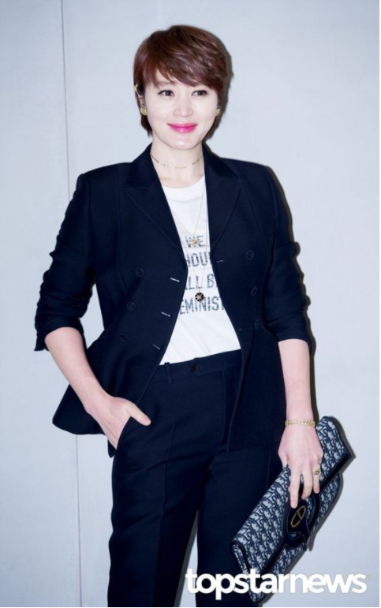
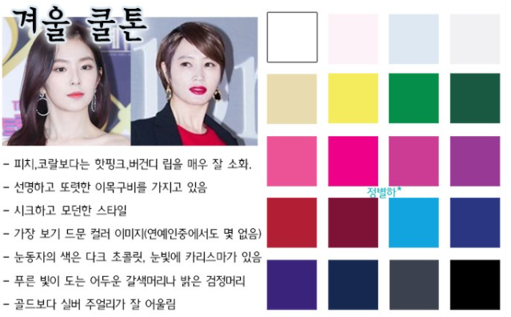
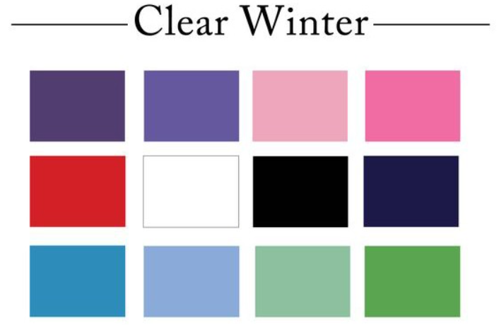
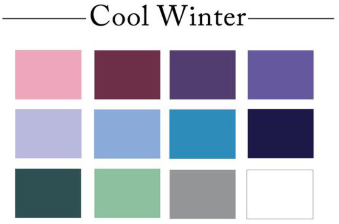
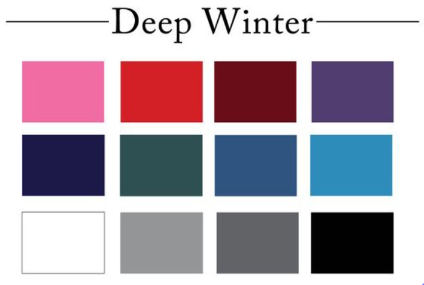

겨울 쿨톤의 대표적인 이미지
사계절 컬러 이미지 중 가장 보기 드물다. 그래서 겨울 쿨톤에 어울리는 색조 화장품 또한 적다.

대표적인 겨울 쿨톤 연예인
가장 대표적인 겨울 쿨톤 연예인은 김혜수 강렬한 레드 립이 부담스럽지 않고 착 달라붙어 얼굴이 더 환하고 빛나게 보인다.

겨울 쿨톤이 가진 이미지, 신체적 특징, 어울리는 색상
피치, 코랄보다는 핫핑크, 버건디 립을 매우 잘 소화 선명하고 또렷한 이목구비를 가지고 있음 시크하고 모던한 스타일 가장 보기 드문 컬러 이미지 눈동자의 색은 다크 초콜릿, 눈빛에 카리스마가 있음 푸른 빛이 도는 어두운 갈색머리나 밝은 검정머리 골드보다 실버 주얼리가 잘 어울림

Clear Winter
깨끗하고 맑은 겨울 색상

Cool Winter
시원한 겨울 색상

Deep Winter
진한 겨울 색상